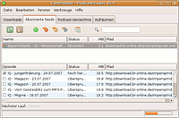

Podcast
Zum Verständnis dieses Artikels sind folgende Seiten hilfreich:
Ein Podcast ermöglicht dem Internetbenutzer, Audio- und Videoinhalte mit Hilfe der RSS-Technik zu abonnieren. Viele Rundfunkanstalten bieten ihre Inhalte als Podcasts an, aber auch von Privatleuten werden Beiträge/Sendungen aufgenommen und auf diese Weise im Internet bereitgestellt. Die Audio-Dateien werden in einem RSS-Feed verlinkt und diese Feeds können dann von Podcatchern heruntergeladen werden. Somit hat man immer die neuesten Inhalte in chronologischer Reihenfolge auf dem Computer. Mittlerweile werden auch Videodateien auf diese Art und Weise angeboten.
Podcatcher¶
Neben reinen Audioplayern wie Amarok, Rhythmbox oder Banshee und Multimedia-Browsern wie PenguinTV gibt es auch Anwendungen, die nur für das Abonnieren und Herunterladen von Podcasts konzipiert sind: die Podcatcher.
gPodder¶
gPodder ist ein Podcatcher geschrieben in Python, welcher neben dem Setzen von Download-Limits auch die Synchronisation mit MP3-Playern wie dem iPod unterstützt.
IcePodder¶

IcePodder  ist die Weiterentwicklung der Linux-Variante des Players Juice (früher iPodder). Er ist ebenfalls in Python geschrieben.
ist die Weiterentwicklung der Linux-Variante des Players Juice (früher iPodder). Er ist ebenfalls in Python geschrieben.
Derzeit steht nur der Python-Quellcode zum Herunterladen via Subversion zur Verfügung. Das Programm kann anschließend mit dem Befehl icepodder gestartet [2] werden. Leider wird kein Eintrag im Startmenü erzeugt, man kann aber einen Eintrag manuell hinzufügen [3].
podget¶
Podget ist ein einfacher Podcatcher ohne eigene Oberfläche. Es gibt eine Kategorie- und Ordnerunterstützung, automatische Playlisten-Erstellung und Importmöglichkeiten (OPML- und iTunes PCAST-Dateien). Der Vorteil ist, dass man das Programm einfach im Terminal aufrufen und mit zwei Konfigurationsdateien verwalten kann. Durch die Einrichtung eines Cronjobs können Inhalte regelmäßig im Hintergrund heruntergeladen werden.
Die Anwendung ist Bestandteil der offiziellen Paketquellen. Folgendes Paket muss installiert [1] werden:
podget (universe)
 mit apturl
mit apturl
Paketliste zum Kopieren:
sudo apt-get install podget
sudo aptitude install podget
Im (versteckten) Verzeichnis ~/.podget befinden sich zwei Dateien: in der Datei podgetrc werden alle Einstellungen getätigt, in serverlist werden die Adressen der abonnierten Feeds eingetragen [4]. Optionen und Beispiele sind kommentiert, die Handhabung gestaltet sich daher unkompliziert. Nun lässt man mit dem Aufruf von
podget
die abonnierten Audio- und Videoinhalte herunterladen. Diese werden im festgelegten Verzeichnis gespeichert und können mit einem beliebigen Player abgespielt werden.
Vocal¶
Vocal ist eine Neuentwicklung und daher nicht in den offiziellen Paketquellen enthalten. Zur Installation muss man daher auf ein "Personal Packages Archiv" (PPA) oder Fremdpakete ausweichen (siehe Install Podcast App ‘Vocal’ 1.0 via PPA in Ubuntu 14.04/15.04 ).
Podcast-Verzeichnisse¶
Rund um Linux und freie Software¶
Hier finden sich mehr oder weniger regelmäßige Veröffentlichungen rund um Linux und FLOSS.
| Podcasts | |||
| Name | Kurzbeschreibung | Link | |
RadioTux  | Internetradio-Projekt mit den thematischen Schwerpunkten Linux, Open Source und Freie Software. | Podcast Übersicht | |
| DeimHart | Podcast von Dirk Deimeke und Roman Hanhart (Anfang 2015 eingestellt) | OGG, MP3 | |
| /dev/radio | Radio Podcast des CCC Ulm | OGG, MP3 | |
| CRE Technik, Kultur, Gesellschaft | Der kleine Bruder des monatlichen Chaos Talkradio mit vielen interessanten Themen und Gästen rund um Technologie. | MP3 | |
| LugRadio - Linux Radio Show | Eine britische Radiosendung rund um Linux und Technologie | OGG, MP3 | |
| Off The Hook | Podcast von 2600 , einem der ältesten Hacking-Mags. | MP3 | |
| Ubuntu Podcast | Der Podcast der britischen Ubuntu-Gemeinschaft | OGG, MP3 | |
| Tuxradar Podcast | Gemütlicher, humorvoller und zuweilen auch etwas desorganisierter Podcast der Macher des Linux Format Magazins mit Neuigkeiten und Diskussionen | OGG, MP3 | |
- Erstellt mit Inyoka
-
 2004 – 2017 ubuntuusers.de • Einige Rechte vorbehalten
2004 – 2017 ubuntuusers.de • Einige Rechte vorbehalten
Lizenz • Kontakt • Datenschutz • Impressum • Serverstatus -
Serverhousing gespendet von